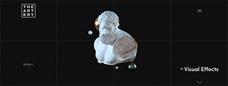
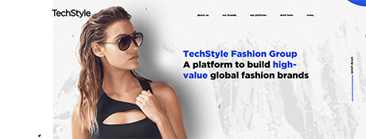
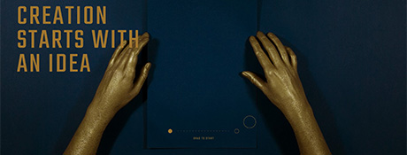

Site Goal(s): They are promoting their creative company. They invite you to work with them.
Target Audience: Their target audience would be a film company or professionals in the film and TV industries who may need design, production, and/or special effects.
Navigation: There is one drop down menu in the upper right corner, when you click on it, there are 7 topics that fill the other 7 squares. However, in the bottom right square, you can click a down arrow to scroll through 5 of those same topics. To me this was a confusing and unnecessary thing to do. Although the name of the page tells you what section you are in, it’s not terribly obvious. The site scrolls up and down. The navigation elements include text, images and animations.
Usability Issues (Ease of Use): This design was not pleasant to use, nor was it easy to accomplish basic tasks. Tasks are not performed quickly and although I encountered no error messages, when I clicked on the down arrow in the lower right square, it didn’t work every time I clicked, and it didn’t let me click back up. But as I mentioned above, that drill felt like a waste of time since you could get to those same topics plus two more when you clicked on the main menu above it. I thought the animated imagery was distracting as it didn’t make sense to me and maybe that’s part of the reason why the site did not feel fluent or move quickly.
Content: I did not find this site to be well written or easy to understand. I was confused as to where to go and it took me a little bit to find exactly what they did. I did not feel that it was very informative, besides them telling you how awesome they think they are, however, after some digging you will figure it out.
Design/Layout: The site is black with a grid of 8 squares. All the text is white. It opens with a floating, animated image, you can scroll down and there is another floating, animated image. There are animated images throughout the site that don’t seem to mean anything, but maybe they mean something to The-Artery. The photos being used throughout the site are all in color, except the photos of the individual team members are black and white, not sure why.

Site Goal(s): They want to promote their fashion company and sell memberships. Their fashion brands are supported by their members. They are selling the idea that they bring their members personalized, on-trend style at an amazing value. They claim that the company has reimagined the entire business cycle of fashion retail.
Target Audience: This site is geared toward the computer-literate, modern consumer; an online shopper. The company claims to be ethical and involved in the community. With brands such as Fabletics, JustFab, Shoedazzle and FabKids, it is geared toward busy young to middle-aged women, with and without kids. They are athletic, fashionable, make a decent income and are all about convenience.
Navigation: There are 5 menu items across the top with drop downs and 5 down the left hand side. The navigation elements are just text so you know where you are going. You also know where you are when you are on a page, shown with a big, bold headline at the top while you are in each section. Also, the page names match the navigation link names. The appearance and treatment of information is consistent throughout. Each page, if needed, contains necessary links to other topic pages, for example, when you are on the “Our Brands” page, there are links to take you to browse each of those brands. This site scrolls up and down only.
Usability Issues (Ease of Use): This design was pleasant to use, it was easy to accomplish basic tasks and it is not a problem to reestablish proficiency. Tasks are performed quickly and I encountered no error messages.
Content: The content was well written, simple to understand and I did not notice any typos. It was informative to what their purpose and mission is and it clearly allows you to sign up and/or shop.
Design/Layout: The site is very clean with a white background. All the text is black or blue (blue is used for highlighting and importance) in a simple, readable, clean font. Full color photos are used with correlating copy in light gray boxes. An organized use of grid and alignment makes the flow simple, up and down only, with no distracting animation.

Site Goal(s): This site informs you who Inculerate is, what they do and what they believe in. They want to invest in your new business.
Target Audience: They are an investment company who offers initial investments to promising companies in the early stages of growth, such as startups. So, the target audience is entrepreneurs and young companies trying to get off the ground who need investors. I also feel like this site is geared toward younger professionals.
Navigation: This site is interactive with no menu items. There is a link to their Facebook page, their logo takes you back to the home page and to navigate the site, you have to drag the solid dot to the hollow circle. The hands and paper in the middle are a video that the dot moves and then the words move into and disappear from the page to show more information. The pages are consistent throughout, no new imagery or graphics appear, it’s just always the hands folding the paper and new words coming in, there is nowhere else to click and go except the Facebook page or the design firm who made this site. The page name never changes because there are no menus and it is just a simple site to explain who they are and what they do.
Usability Issues (Ease of Use): Very easy to use and navigate, it is obvious to me to just drag the dot to go to the next page of content, it moves pretty quickly, even considering the interaction and video. This would be easy to remember with it’s simplicity. I found no errors and thought it was pleasant to use. I didn’t have to search or fumble around to figure it out.
Content: The content was simple and well written with no mistakes that I found. By looking at the home page, you don’t have any idea who they are, but they get right to it as you move to the next page. On the last page it does have a link of an email address where they direct you to present to them your company.
Design/Layout: I thought the contrast between the navy and the gold worked very well. It keeps that same color scheme throughout. The interaction and animation was smooth, consistent and flowed very well. There is a calming music played while you are on the site.
Site Goal(s): They offer a dynamic, creative internship, informing you who they are and what they do. They invite you to apply.
Target Audience: This site would be geared toward educators, students or recent grads seeking internships as designers or developers. I imagine young, cool, dynamic creatives working here.
Navigation: They invite you to watch a video of testimonials on the home page, then you scroll down and can then enter one of 2 sites, “Designer” or “Developer”. After you enter a site, there is an “About” button in the upper right or left and 3 menu items to choose from down the left or right side of the page. You can scroll all the way down to read through all 3 sections or you can click on one and jump to that section. You click on type or a box with type in it. The site moves up and down. The page names do change to match the page you are on. Each primary topic page such as the “Designer” and “Development” pages have links to their own primary topics for information regarding that section.
Usability Issues (Ease of Use): At first I wasn’t sure if I should watch the video on the home page or scroll down to see what it’s about. While scrolling down first and entering the section you want will eventually tell you who they are and what they do, I’m glad I watched the video. The video was personal testimonials of interns and a person explaining the program. So then when I scrolled down I knew going in what it was about. Tasks are performed easily and quickly. There were no errors and I enjoyed using the design.
Content: The quality of the content was top notch. It was well written, fun, informative and interesting. Since the summer of 2017 was their last program and that was when the video was from, I would say the content is up to date. They are accepting applications for the summer of 2018.
Design/Layout: Very nice flow and pleasant design and color scheme. While the home page is black, once you enter, the “Design” side is white and the “Developer” side is dark gray. The copy is either gray, white or gold and all photos are in color. The site is balanced well with a good flow.